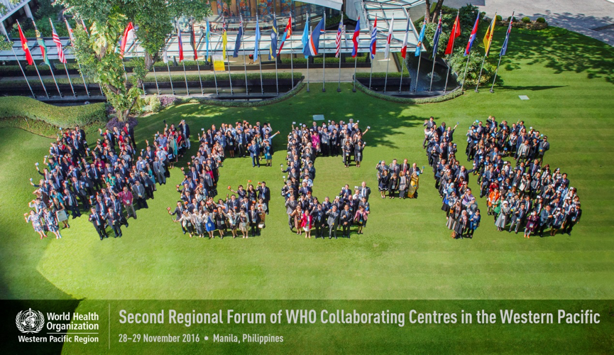
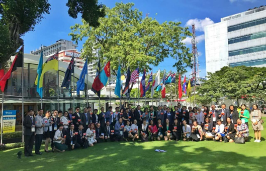
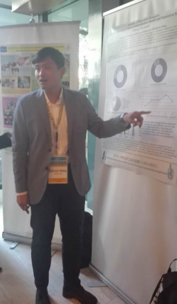

师生参加“西太平洋地区第二届WHO合作中心区域论坛”
2016年11月28日—11月29日，北京大学人口研究所王振杰老师带领2015级博士生温煦、黄国桂、2015级硕士生付艳艳代表北大人口所赴菲律宾马尼拉参加西太平洋地区WHO合作中心第二届区域论坛，并做poster展示。

此次WHO合作中心区域论坛有西太平洋地区的29个国家和地区的130多个WHO合作中心参加。此次论坛主要有四项任务——盘点第一次论坛之后取得的进步、明确SDGs的内涵和应用、收集支持CC工作与研究的优先领域、提出创新的合作机制，以及共同提出建议，修改2016年工作目标与计划，旨在有效衔接两次论坛的工作与发展目标、提出实现SDGs 的跨学科、跨职业的创新合作机制，以及深化CC与WHO，以及CC之间的互助合作。

会议共两天时间，集体大会和分论坛交互进行。第一天大会介绍WHO合作中心成员后为集体照时间，期间所有中国代表齐聚合影，香港的同胞主动提出合影令人感动。之后大会汇报了一下第一届区域论坛之后WHO合作中心工作中遇到的机遇和挑战，分享合作交流经验，并深入解读了2030年可持续发展目标中的健康目标。分论坛主要围绕非传染性疾病、健康促进、健康饮食、精神健康和药物滥用、生殖健康和青少年健康、国际健康政策、健康研究的伦理和法律、健康信息和科技健康、健康劳动力、以及环境健康等。

王振杰老师一行人与参会代表进行了poster交流，介绍北京大学人口研究所关于生殖健康的研究进展，并与其他专家学者积极互动，相互了解并学习研究进展。此次论坛围绕联合国可持续发展目标展开，对各WHO合作中心开展工作具有很高的指导意义。